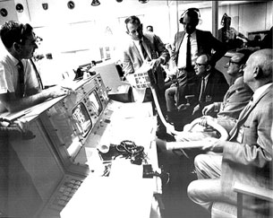
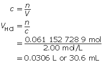

Courtesy NASA
The picture on the right shows NASA engineers hard at work after the explosion. The engineers are attempting to construct a carbon dioxide filtration system for the astronauts aboard the Apollo 13 spacecraft.
What scientific skills and attitudes do you think the scientists in this photo possess?
Save a copy of your answers to your course folder. You may wish to share your answers with your classmates or some other people.
In Module 6 you learned that baking powder is a combination of sodium hydrogen carbonate (baking soda) and potassium hydrogen tartrate (cream of tartar). Although these two substances are present in stoichiometric proportions in baking powder, what would be the result if one component were in excess relative to the other component?
Recall from your study in Module 5 that an excess of the sodium hydrogen carbonate—a basic compound known to have a bitter taste—could alter the taste of the food being baked. Similarly, an excess of potassium hydrogen tartrate could leave the finished product with a different undesirable taste, or it could allow for an unexpected reaction to occur with another ingredient.
Have you considered what effect a deficiency of one component relative to another might have on the quantity of carbon dioxide produced by the reaction? A cake that doesn’t rise to its desired height or texture may have been the unfortunate result of a component in the recipe being in a limited quantity relative to the other components.
How do you use your knowledge of stoichiometry to design a reaction that will ensure that it is a complete reaction?
Read “Calculating Mass of Excess Reagents” on page 320 of your textbook. Then work through “SAMPLE problem 8.1.”
SC 1. Complete “Practice” question 2 on page 321 of your textbook.
SC 1. “Practice” question 2, page 321
Zn(s) |
+ |
2 HCl(aq) |
→ |
ZnCl2(aq) |
+ |
H2(g) |
m = 2.00 g |
|
c = 2.00 mol/L |
|
|
|
|

Now add 10% to this value.
30.6 mL + 3.1 mL = 33.7 mL